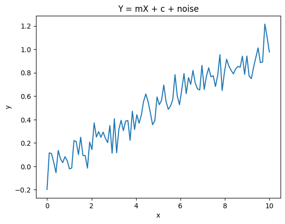
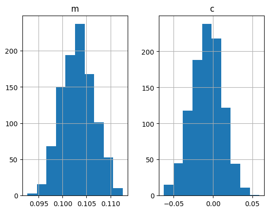
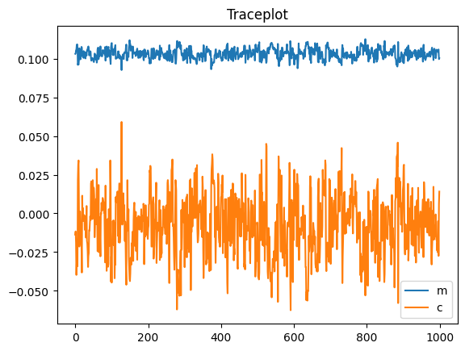
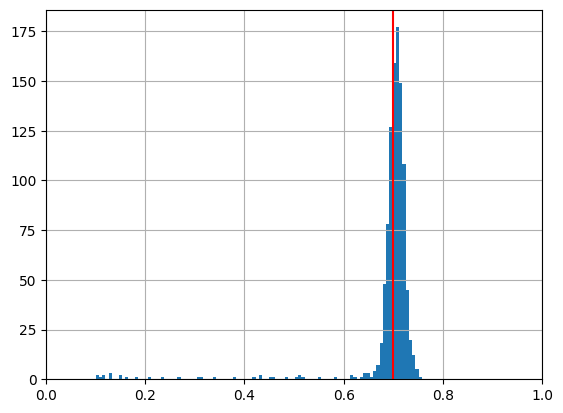
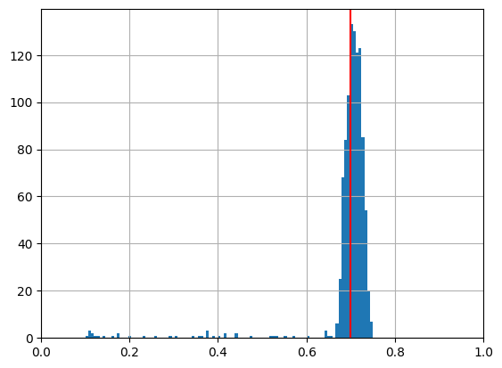
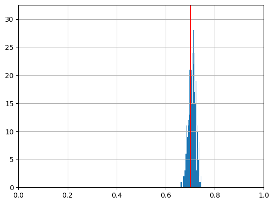

Simple Bayesian Inference Examples
[10]:
import jax.numpy as jnp
from jax import random
from jax.scipy.special import logsumexp
from jax import grad
import pandas as pd
import numpy as np
import matplotlib.pyplot as plt
Linear Regression
Lets set up a linear regression problem and get samples from the likelihood function. First we produce the data
[3]:
key = random.PRNGKey(0)
m = 0.1
c = 0
X = jnp.linspace(0,10,100)
noise_amount = 0.1
eps = noise_amount*random.normal(key, X.shape)
Y = m*X + c + eps
plt.plot(X,Y)
plt.xlabel("x")
plt.ylabel("y")
plt.title("Y = mX + c + noise")
plt.show()

Linear Regressor Model
Here we create the model. All we need is a class that has a logpdf function that takes in a dictionary of data and outputs the logpdf
[4]:
class LinearRegressor:
def __init__(self, X, Y, noise=1):
self.X = X
self.Y = Y
self.noise = noise
def logpdf(self, x):
Z = (self.Y - x['m']*self.X - x['c'])/self.noise
return jnp.sum(-(Z**2))/2
Instantiate the model
[5]:
LR = LinearRegressor(X,Y,noise=noise_amount) # Instantiate the model
Set starting point of the NUTS sampler to some point specified as a dictionary. Then initialize the NUTS sampler
[6]:
from quicksampler import NUTS
import jax
initial_position = {'m':0.0, 'c':1.0} # starting point of the NUTS sampler
problem = NUTS(LR, initial_position)
Run the results
[7]:
result = problem.run(1000)
Running the inference for 1000 samples
[12]:
df = pd.DataFrame(result)
df
[12]:
| m | c | |
|---|---|---|
| 0 | 0.103061 | -0.013709 |
| 1 | 0.103323 | -0.011630 |
| 2 | 0.105348 | -0.018875 |
| 3 | 0.105896 | -0.039735 |
| 4 | 0.108621 | -0.031321 |
| ... | ... | ... |
| 995 | 0.104327 | -0.025296 |
| 996 | 0.105400 | -0.005010 |
| 997 | 0.105913 | -0.027444 |
| 998 | 0.099664 | 0.005911 |
| 999 | 0.100274 | 0.014101 |
1000 rows × 2 columns
[13]:
df.hist()
[13]:
array([[<Axes: title={'center': 'm'}>, <Axes: title={'center': 'c'}>]],
dtype=object)

The chain will be returned as a dataframe. We can now create a traceplot and a histogram of the parameters
[14]:
df.plot(title="Traceplot");

Inferring coin flip bias with the Metropolis Hastings Sampler & numpy
Same thing again, lets generate some data. We’ll do 100 experiments of 10 flips each using a biased coin with parameter \(p\)
[50]:
import jax
import jax.numpy as jnp
import scipy
N_experiments = 100
N_flips = 10
p = 0.7
rv = scipy.stats.binom(N_flips, p)
head_counts = rv.rvs(N_experiments)
Now lets define our coin flip model:
[51]:
class CoinFlip:
def __init__(self, N_flips, number_of_heads):
self.head_counts = number_of_heads
self.N_flips = N_flips
def logpdf(self, x):
p = x['p']
return jnp.sum( jax.scipy.stats.binom.logpmf(self.head_counts, self.N_flips, p) )
[52]:
from quicksampler import NUTS, MHSampler
CF = CoinFlip(10, head_counts)
initial_position = {'p':0.1} # starting point of the NUTS sampler
problem2 = MHSampler(CF, initial_position, limits={'p': [0,1]}, step_size=0.1, backend='numpy');
[53]:
result2 = problem2.run(1000);
Getting 1000 using Metropolis Hastings
100%|██████████████████████████████████████| 1000/1000 [00:03<00:00, 293.00it/s]
Sampling finished with an acceptance rate of 60.79
[54]:
import pandas as pd
import matplotlib.pyplot as plt
result = pd.DataFrame(result2)
result['p'].hist(bins=100)
plt.xlim((0,1))
plt.axvline(p, c='r')
plt.show()

Inferring coin flip bias with the Metropolis Hastings sampler and JAX
[55]:
CF = CoinFlip(10, head_counts)
initial_position = {'p':0.1} # starting point of the NUTS sampler
problem2 = MHSampler(CF, initial_position, limits={'p': [0,1]}, step_size=0.1, backend='JAX');
[56]:
result2 = problem2.run(1000);
Getting 1000 using Metropolis Hastings
100%|██████████████████████████████████████| 1000/1000 [00:03<00:00, 285.28it/s]
Sampling finished with an acceptance rate of 72.15
[57]:
import pandas as pd
import matplotlib.pyplot as plt
result = pd.DataFrame(result2)
result['p'].hist(bins=100)
plt.xlim((0,1))
plt.axvline(p, c='r')
plt.show()

Inferring coin flip bias with the NUTS sampler
[58]:
CF = CoinFlip(10, head_counts)
initial_position = {'p':0.1} # starting point of the NUTS sampler
problem2 = NUTS(CF, initial_position, limits={'p': [0,1], 'mu': [0.0, 1.0]}, step_size=0.1);
[59]:
result2 = problem2.run(1000);
Running the inference for 1000 samples
[60]:
import pandas as pd
import matplotlib.pyplot as plt
result = pd.DataFrame(result2)
result['p'].hist(bins=100)
plt.xlim((0,1))
plt.axvline(p, c='r')
plt.show()
